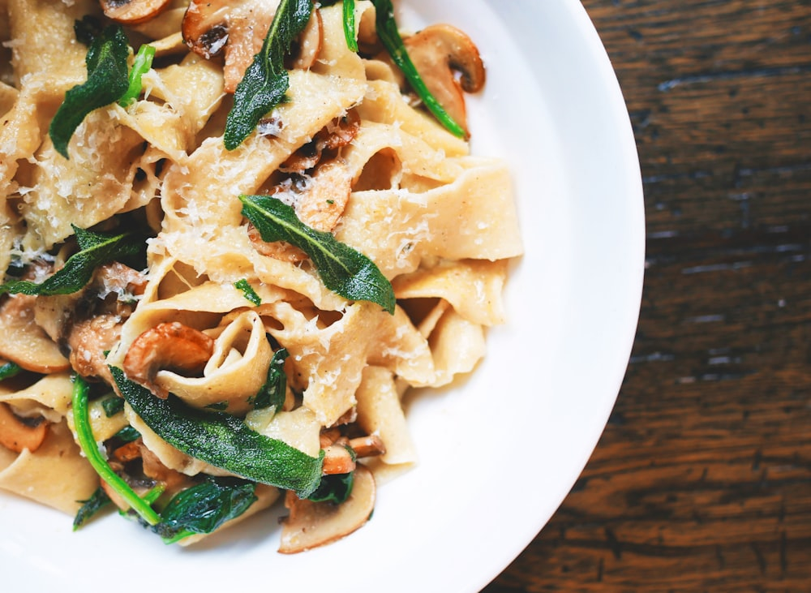
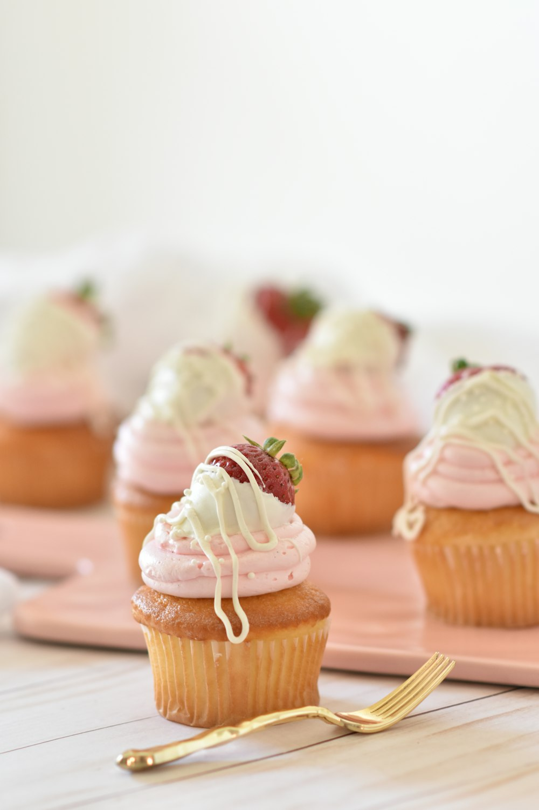

😋
맛집헌터
@taste_hunter · 개성파 미식가
142
맛 표현
87
리스펙
23
탐정 해결
나의 미식 MBTI
S·C·B·I
자극 러버 × 크리에이티브 미식가
상위 10%의 독특한 취향 · 염도 7 이상 선호
단짠 밸런스 85% · 치팅 지수 상위 15%
단짠 밸런스 85% · 치팅 지수 상위 15%
🎯 나의 맛 프로파일
📌 최근 맛 기록



